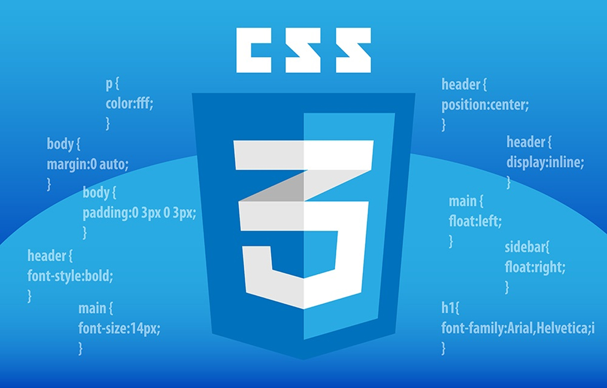

CSS

Cascading Style Sheets (CSS) is a style sheet language used for describing the presentation of a document written in a markup language like HTML. CSS is a cornerstone technology of the World Wide Web, alongside HTML and JavaScript.
CSS is designed to enable the separation of presentation and content, including layout, colors, and fonts.This separation can improve content accessibility, provide more flexibility and control in the specification of presentation characteristics, enable multiple web pages to share formatting by specifying the relevant CSS in a separate .css file which reduces complexity and repetition in the structural content as well as enabling the .css file to be cached to improve the page load speed between the pages that share the file and its formatting.
Separation of formatting and content also makes it feasible to present the same markup page in different styles for different rendering methods, such as on-screen, in print, by voice (via speech-based browser or screen reader), and on Braille-based tactile devices. CSS also has rules for alternate formatting if the content is accessed on a mobile device.
The name cascading comes from the specified priority scheme to determine which style rule applies if more than one rule matches a particular element. This cascading priority scheme is predictable.
Variations
CSS has various levels and profiles. Each level of CSS builds upon the last, typically adding new features and typically denoted as CSS 1, CSS 2, CSS 3, and CSS 4. Profiles are typically a subset of one or more levels of CSS built for a particular device or user interface. Currently there are profiles for mobile devices, printers, and television sets. Profiles should not be confused with media types, which were added in CSS 2.
CSS 1
The first CSS specification to become an official W3C Recommendation is CSS level 1, published on December 17, 1996. Håkon Wium Lie and Bert Bos are credited as the original developers. Among its capabilities are support for
- Font properties such as typeface and emphasis
- Color of text, backgrounds, and other elements
- Text attributes such as spacing between words, letters, and lines of text
- Alignment of text, images, tables and other elements
- Margin, border, padding, and positioning for most elements
- Unique identification and generic classification of groups of attributes
- The W3C no longer maintains the CSS 1 Recommendation.
CSS 2
CSS level 2 specification was developed by the W3C and published as a recommendation in May 1998. A superset of CSS 1, CSS 2 includes a number of new capabilities like absolute, relative, and fixed positioning of elements and z-index, the concept of media types, support for aural style sheets (which were later replaced by the CSS 3 speech modules)and bidirectional text, and new font properties such as shadows. The W3C no longer maintains the CSS 2 recommendation.
CSS 2.1
CSS level 2 revision 1, often referred to as "CSS 2.1", fixes errors in CSS 2, removes poorly supported or not fully interoperable features and adds already implemented browser extensions to the specification. To comply with the W3C Process for standardizing technical specifications, CSS 2.1 went back and forth between Working Draft status and Candidate Recommendation status for many years. CSS 2.1 first became a Candidate Recommendation on February 25, 2004, but it was reverted to a Working Draft on June 13, 2005 for further review. It returned to Candidate Recommendation on 19 July 2007 and then updated twice in 2009. However, because changes and clarifications were made, it again went back to Last Call Working Draft on 7 December 2010.
CSS 2.1 went to Proposed Recommendation on 12 April 2011. After being reviewed by the W3C Advisory Committee, it was finally published as a W3C Recommendation on 7 June 2011.
CSS 2.1 was planned as the first and final revision of level 2—but low priority work on CSS 2.2 began in 2015.
CSS 3
Unlike CSS 2, which is a large single specification defining various features, CSS 3 is divided into several separate documents called "modules". Each module adds new capabilities or extends features defined in CSS 2, preserving backward compatibility. Work on CSS level 3 started around the time of publication of the original CSS 2 recommendation. The earliest CSS 3 drafts were published in June 1999.
Due to the modularization, different modules have different stability and statuses.
Some modules have Candidate Recommendation (CR) status and are considered moderately stable. At CR stage, implementations are advised to drop vendor prefixes.